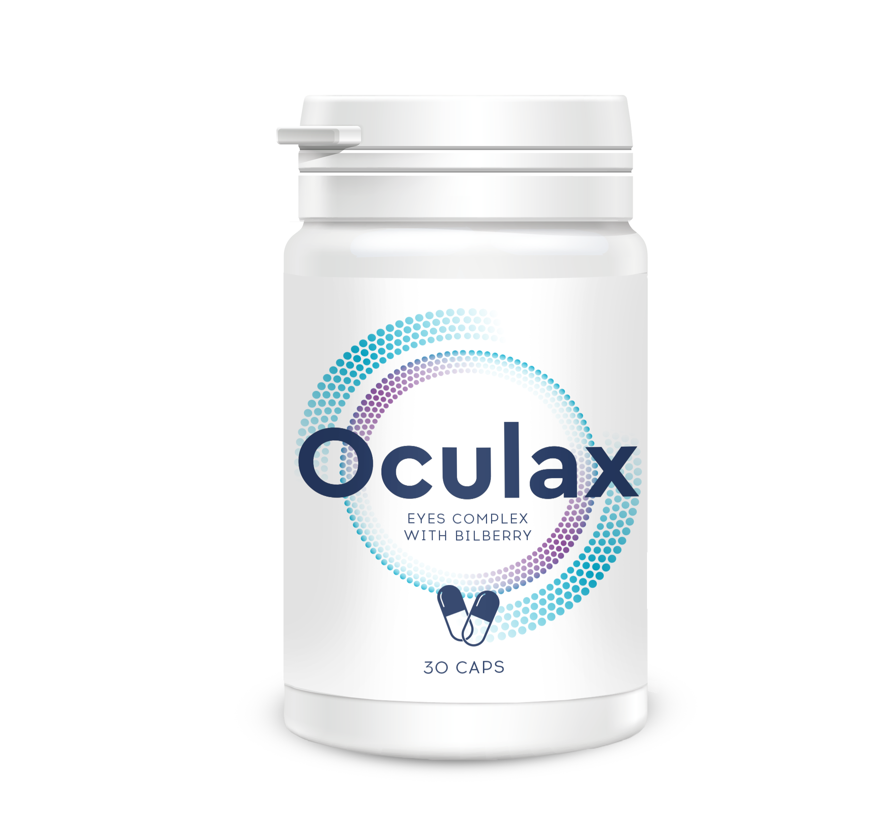

В Китае не знают, что такое проблемы со зрением, и до 80 лет не обращаются к окулисту! Как сохранить зрение и забыть про очки?
Добрый день! Меня зовут Константин Ковалёв, более 30 лет я занимаюсь лечением зрения в Польше. Каково же было мое удивление, когда об уникальной разработке наших ученых я узнал… на конференции в Шанхае!
Начнем с фактов. В Польше проблемы со зрением приобрели характер эпидемии, на сегодняшний день с ухудшением зрения сталкиваются в 4 раза больше жителей страны, чем во всем остальном мире. Отсутствие адекватного лечения приводит к снижению качества жизни, инвалидности и операциям.
Мы проводили исследования в НИИ офтальмологии в 2020 г. и выяснили, что у 90% пациентов возрасте старше 50 лет наблюдаются следующие проблемы:
- Вторичная глаукома – 87%
- Синдром сухого глаза – 63%
-
Катаракта. – 38%

При этом большинство испытуемых даже не думали обращаться к врачам. Часть пытались лечиться народными методами, другие просто начинали носить очки, линзы, или делали операцию.
Отдадим должное и нашим врачам, которые не спешат разбираться в проблеме, сразу назначают пациентам дорогостоящие препараты, объясняя это тем, что снижение зрения - это обязательный спутник зрелого возраста.
Сегодня я хочу рассказать о том, как быстро и безопасно решить большинство проблем со зрением, не прибегая к дорогим препаратам и не рискуя делать операцию.
Для начала давайте разберемся в главной причине снижения зрения
Стойкое снижение зрения - это прямое следствие забитых сосудов! Работа всех внутренних органов и систем зависит от качества кровоснабжения. Ведь, что такое кровоснабжение – это доставка кислорода и питательных веществ, а также забор углекислого газа и продуктов обмена к внутренним органам. В детстве, юношестве, молодости мы много двигаемся, сосуды у нас новые, эластичные, чистые – питание всех органов максимальное. Однако с возрастом мы двигаемся все меньше, а наши сосуды начинают загрязняться. Связано это с различными факторами – не только вредными (например, такими как курение, плохое питание, экология, малоподвижный образ жизни), но и вполне естественными (отложение липидов, например, которое происходит у всех). Как следствие - сетчатка и хрусталик не получают нужного питания и начинают выходить из строя.
Эти факторы играют ключевую роль в развитии болезни! Но есть и хорошая новость. Современная медицина способна не только отсрочить ухудшение зрения, но и восстановить зрение на любой стадии болезни!
Вернемся к моей поездке на конференцию офтальмологов в Шанхае в 2020 году. Когда мои китайские коллеги услышали, какими методами и препаратами мы пользуемся для восстановления зрения, они посмотрели на меня, как на дикаря. Дело в том, что в Китае болезни глаз занимают последнюю строчку в списке самых распространенных проблем со здоровьем. Эта проблема давно решена и не беспокоит людей как минимум до 80 лет!
Но, что самое интересное – они используют для этого средство, которое произведено в Польше! Представляете, как мне было стыдно, когда я об этом узнал в Шанхае?
Для очистки сосудов глазного дна и восстановления зрения, местным жителям выписывают натуральный препарат под названием Oculax. Благодаря своему природному составу и отсутствию «химии» и ГМО Oculax борется с причиной ухудшения зрения.

Секрет эффективности заключается в составе . Это природный препарат, который как щеткой очищает даже самые загрязненные сосуды и лечит все известные болезни глаз.
Шанхайские коллеги поделились со мной и результатами клинических испытаний:
- 97,7% пациентов очистили сосуды глазного дна от отложений
- 97,8% восстановили зрение и отказались от ношения очков
- 99,1% пациентов в течении 2х месяцев после курса лечения сообщали, что зрение остается четким и не ухудшается
Результаты поражают. На сегодняшний день Oculax – это самое эффективное средство для восстановления зрения в домашних условиях.
Несмотря на то, что в Польше Oculax выпускается уже 5 лет, основные продажи средства шли на экспорт. Oculax сертифицирован в 38 странах мира и широко популярен в странах Европы и Азии. В Польше – родине средства – он использовался очень мало. А знаете почему? Причина в нашем менталитете. Врачи долгое время не хотели признавать, что зрение можно вылечить в домашних условиях за небольшие деньги. И продолжали залечивать пациентов, вынуждая их регулярно приходить на прием. Только сейчас, благодаря государственной программе, Oculax занял свое достойное место в списке средств для лечения зрения
В чем основное отличие Oculax от конкурентов?
Oculax
- Результат достигается уже после первого приема;
- Длительный эффект;
- Натуральный состав;
- Побочные эффекты отсутствуют;
- Товар сертифицирован;
- Эффект доказан клинически.
Итог:
Высокая эффективность уже после первого применения, быстрый результат и отсутствие побочных эффектов.
Другие препараты

- Необходимость долгого применения для достижения результата;
- Временный эффект;
- В составе много химии и вредных веществ;
- Часть средств продается без сертификатов;
- Очень высокая цена;
- Большая часть препаратов не предоставляет доказательства эффективности.
Итог:
Низкая эффективность, длительное лечение и наличие побочных эффектов.
Важно! В результате исследований было установлено, что октябрь и ноябрь - лучшее время для начала лечения. Благодаря стабилизации средней температуры ускоряются обменные процессы в организме, эффект от применения средства усиливается. Излечение происходит на 37% быстрее, чем в другое время года.Сегодня выписать Oculax можно напрямую у производителя. Причем по льготной программе можно получить по акции. А доставка осуществляется в любой город Польши. Наконец-то у жителей нашей страны появился шанс на долгую и насыщенную жизнь, без ухудшения зрения, необходимости ношения очков, или операций.
Условия получения средства по акции:
Только для личного использования
Это нужно для борьбы с перекупщиками, которые пытаются массово выкупать Oculax и перепродавать его со своей наценкой
Оформить заявку через официальный сайт программы
Официальный сайт - это гарантия от производителя и защита от перекупщиков
Подведем итоги!
- Oculax – это натуральное средство, которое восстановит
- Средство сертифицировано на территории Польши, полностью натурально и не имеет побочных эффектов.
- Oculax обладает широким спектром действия.
- На сегодняшний день Oculax является самым эффективным средством для восстановления зрения (доказано клинически).
И напоследок хочу также дать рекомендации по применению средства.
Результат вы почувствуете уже после первого применения, но для полного
излечения я рекомендую пройти полный курс, который составит всего 30
дней.
Здоровья вам и долгих лет жизни!
ВНИМАНИЕ! ОСТЕРЕГАЙТЕСЬ ПОДДЕЛОК!
Oculax на территории Польши можно получить только на официальном сайте
получить по акцииДобавлено 12 часов назад | Примечание редакции: Важная новость! На текущий момент программа проходит до включительно. До окончания акции оригинальное средство Oculax можно получить через официальный сайт всем желающим! На текущий момент остаток акционных упаковок: 43 ШТ.
Обсуждение:


Оставить комментарий

Только один день - при оформлении заказа всем местным жителям "Oculax" предоставляется бесплатно!


Алла
Ну вот почему до наших врачей все доходит как до жирафов?? Кто лоббирует продажу дорогих медикаментов? Я до сих пор Oculax не во всех аптеках вижу!